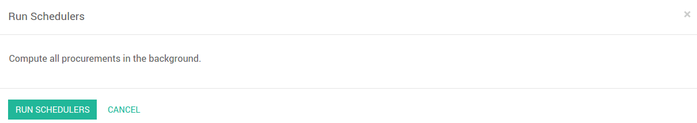

排程器是什么
排程器就是计划和排定根据产品上设定的规则自动生产或者自动采购的优先级的计算引擎。默认状况下，排程器被设置为一天运行一次(YuanCloud自动创建一个**排程器动作**)。
计算需求／排程
排程器只会确认已经确认的但是还没有开始的补货。该补货会对依赖于需求产品的配置要开始的生产，任务或者采购进行预留。
在开始预留和补货的时候你要考虑到操作的优先级。过去的带有日期急迫的需求，或者那些需求日期比其余的要早的会先开始。以防库存中没有足够的产品满足需求，你可以先确保那些最先需求的产品先进行生产。
配置并运行排程器
手工运行排程
默认状况下，该特性是看不到的。你需要激活**开发者模式**才能看到。要激活开发者模式，可以进入：[UNKNOWN NODE title_reference] 并点击**激活开发者模式 [UNKNOWN NODE problematic]。
你还可以手工的开启排程器。进入菜单：[UNKNOWN NODE problematic]库存 --> 排程器 --> 运行排程器 [UNKNOWN NODE problematic]。排程器会使用产品上，供应商，以及公司上定义的所有相关参数来决定不同生产订单，交货单以及供应商采购订单之间的优先级。
配置并且运行排程器(只有高级用户才可以)
默认状况下，该特性是看不到的。你需要激活**开发者模式**才能看到。要激活开发者模式，可以进入：[UNKNOWN NODE title_reference] 并点击**激活开发者模式 [UNKNOWN NODE problematic]。
你可以以下菜单通过更改相关的动作设置开始时间：[UNKNOWN NODE title_reference]。更改运行MRP排程器的配置。